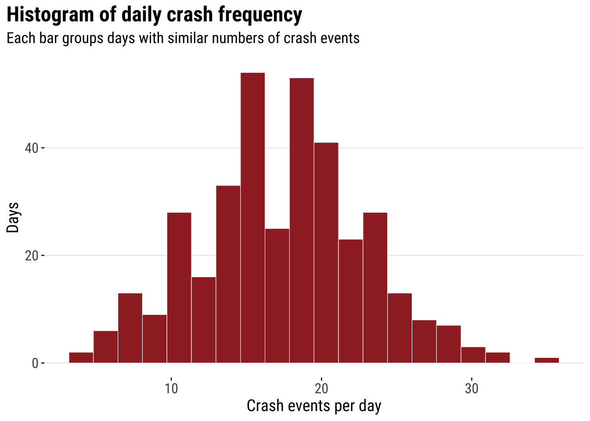
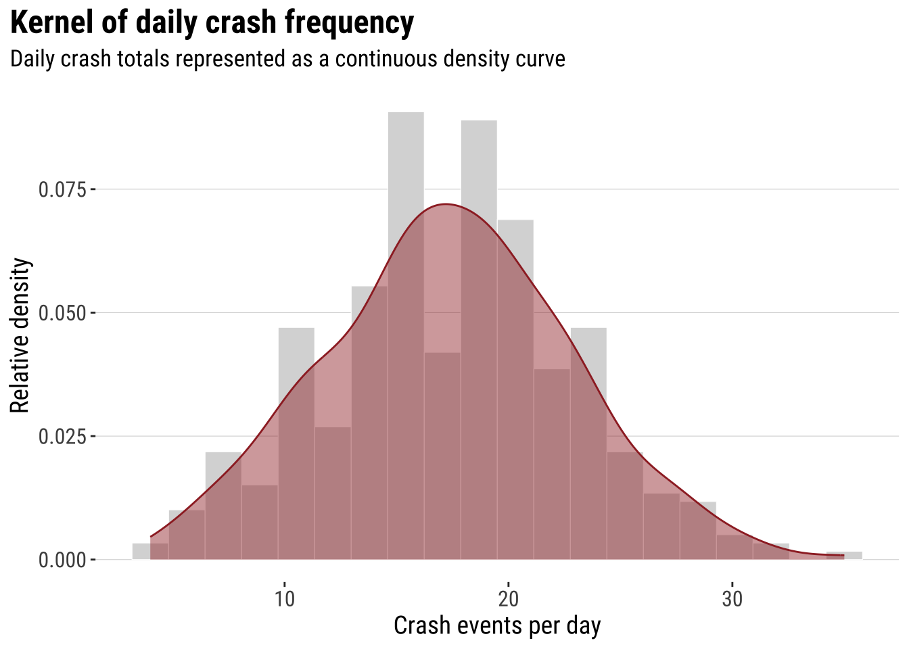
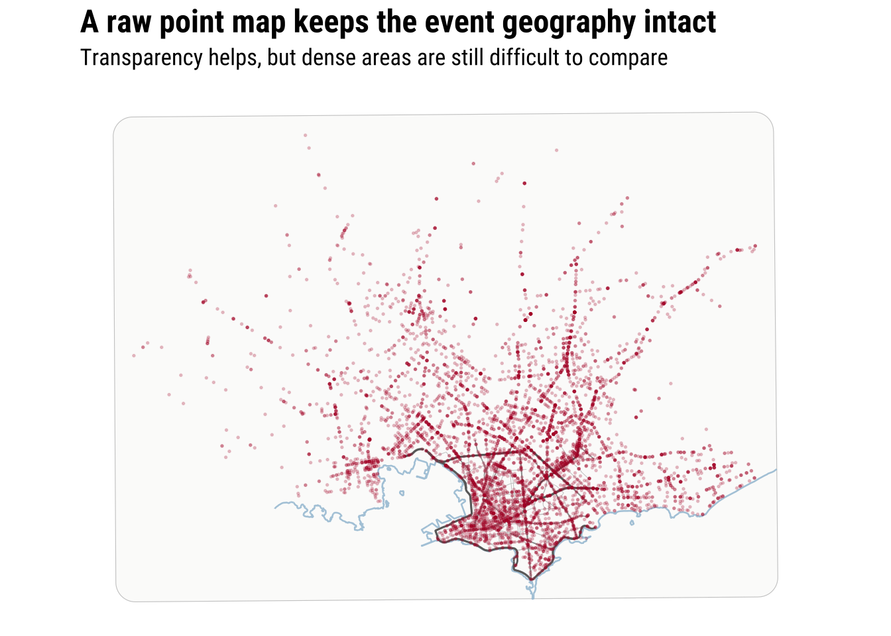
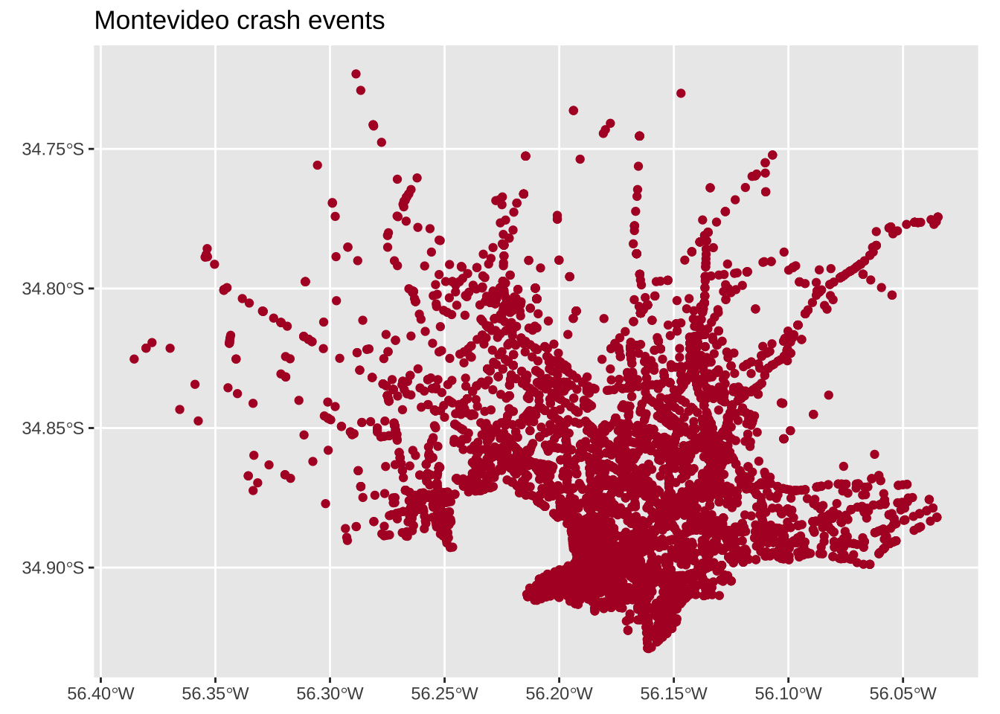
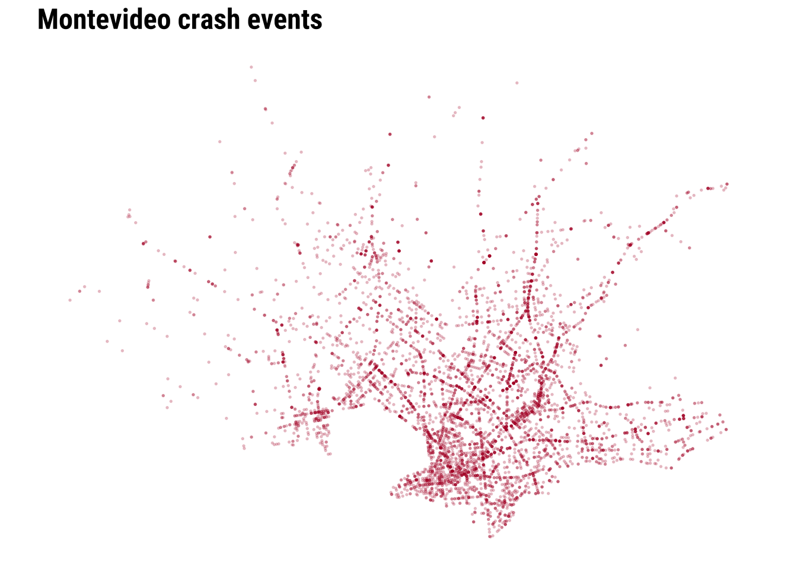
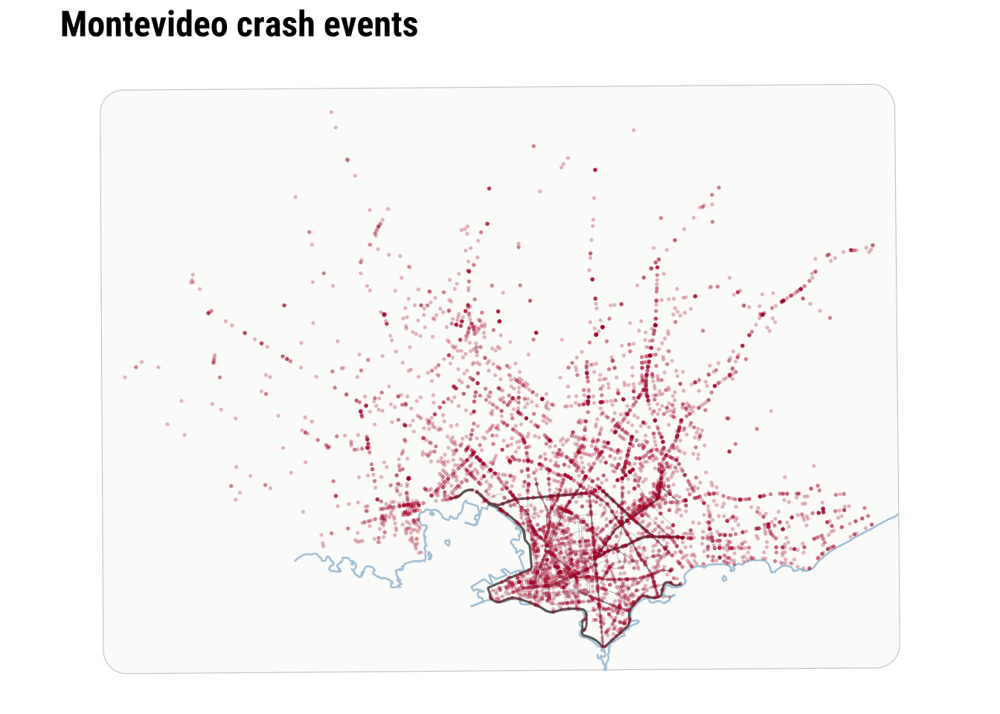
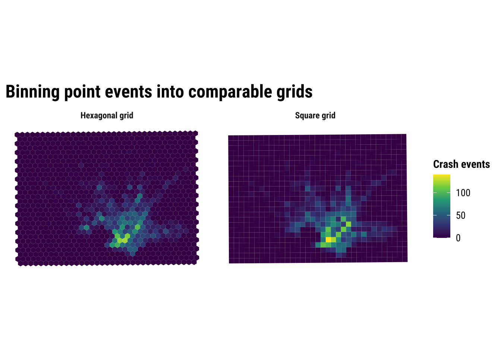
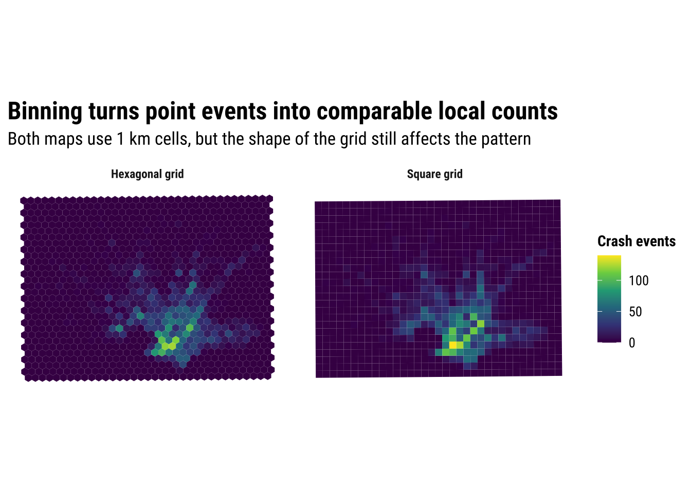
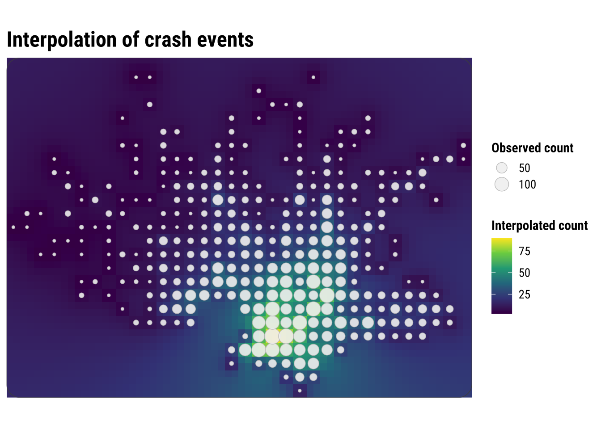

3 Point Patterns
This chapter introduces point-pattern thinking through a Montevideo case: traffic injury records from 2022. The aim is to cover key techniques on how to visualise and analyse point patterns, such as spatial concentration and clustering. Before building formal models, we usually want to know where events are concentrated, whether that concentration is local or widespread, and how different mapping choices change what we see.
By the end of this chapter, you should be able to:
- import spatial point datasets, aggregate data in relevant units of analysis and convert non-spatial data into a point layer with an appropriate coordinate reference system;
- compare raw point maps, regular binning, and kernel density estimation to identify and interpret patterns of spatial concentration;
- produce and assess simple smoothed surfaces from point-event data, and explain the difference between observed counts, relative density, and interpolated predictions;
The chapter is structured to began describing and manipulating the data into desirable format. This is before visualising and modelling the data before producing predictions.
3.1 Dependencies
3.2 Data description
The chapter uses the Montevideo traffic injuries file for 2022, stored locally as data/montevideo-traffic-injuries-2022.csv. The source data are recorded at the person level, which means a single crash can appear in more than one row if several people were injured. For point-pattern analysis, the more appropriate observational unit is the crash event rather than the injured person. Hence, we will collapse the source records to unique events before mapping or smoothing them.
# A tibble: 6 × 19
Fecha Edad Rol Calle Zona `Tipo de resultado` `Tipo de siniestro`
<chr> <chr> <chr> <chr> <chr> <chr> <chr>
1 01/01/2022 37 PASAJERO CAMI… URBA… HERIDO LEVE COLISION ENTRE VEH…
2 01/01/2022 45 CONDUCTOR CAMI… URBA… HERIDO LEVE COLISION ENTRE VEH…
3 01/01/2022 69 CONDUCTOR BOUL… URBA… HERIDO LEVE CAI�DA
4 01/01/2022 31 CONDUCTOR SIN … URBA… HERIDO LEVE COLISION ENTRE VEH…
5 01/01/2022 19 CONDUCTOR JOAN… URBA… HERIDO LEVE COLISION ENTRE VEH…
6 01/01/2022 29 CONDUCTOR JOAN… URBA… HERIDO LEVE COLISION ENTRE VEH…
# ℹ 12 more variables: `Usa cinturI�n` <chr>, `Usa casco` <chr>,
# `DI�a de la semana` <chr>, Sexo <chr>, Hora <dbl>, Departamento <chr>,
# Localidad <chr>, Novedad <dbl>, `Tipo de Vehiculo` <chr>, fixed <chr>,
# X <dbl>, Y <dbl>The dataset is also a good example case because it combines core concepts described in earlier chapters:
- the geometry is stored as coordinates in a regular table rather than as a ready-made spatial file
- the coordinate system is projected, not longitude/latitude
- the observational unit in the raw file is not yet the analytical unit we want
This is exactly the sort of practical situation that often appears in applied research. The data are usable, but only after we inspect them carefully and make the analytical unit explicit.
3.3 Data wrangling
We re-read the Montevideo traffic injuries file for processing. That means cleaning column names, and collapsing person-level records to unique crash events. The code below also reads the local OSM context layers used later for the city-scale point map.
uruguay <- spData::world |>
# Keep only the Uruguay boundary for national context
filter(name_long == "Uruguay") |>
st_make_valid()
uruguay_utm <- st_transform(uruguay, 32721)
injury_path <- "data/montevideo-traffic-injuries-2022.csv"
roads_path <- "data/osm/montevideo_roads.gpkg"
coastline_path <- "data/osm/montevideo_coastline.gpkg"
if (!file.exists(injury_path)) {
stop("The chapter expects data/montevideo-traffic-injuries-2022.csv to be present.")
}
injuries_raw <- read_csv(
injury_path,
show_col_types = FALSE
) |>
# Standardise names once so later code is easier to read
rename_with(\(x) {
x |>
iconv(to = "ASCII//TRANSLIT", sub = "") |>
make.names(unique = TRUE) |>
str_to_lower()
}) |>
mutate(
# Parse the source date field for the histogram section
fecha = dmy(str_trim(fecha)),
x = as.numeric(x),
y = as.numeric(y)
)
crash_events_tbl <- injuries_raw |>
# Collapse person-level rows to unique crash events
group_by(novedad, x, y) |>
summarise(
persons_recorded = n(),
event_date = first(na.omit(fecha)),
across(any_of(c("calle", "zona", "departamento", "localidad")), first),
.groups = "drop"
) |>
mutate(data_source = "Montevideo traffic injuries (event-collapsed)")
crash_events <- st_as_sf(
crash_events_tbl,
# The course workflow uses WGS 84 / UTM zone 21S
coords = c("x", "y"),
crs = 32721,
remove = FALSE
)
crash_events_ll <- st_transform(crash_events, 4326)
study_window <- st_as_sfc(st_bbox(crash_events)) |>
st_buffer(1000)
study_window_ll <- st_transform(study_window, 4326)
if (file.exists(roads_path)) {
local_roads_ll <- st_read(roads_path, quiet = TRUE) |>
st_crop(study_window_ll) |>
filter(highway %in% c(
"trunk", "trunk_link",
"primary", "primary_link",
"secondary", "secondary_link",
"tertiary", "tertiary_link"
)) |>
mutate(
road_class = case_when(
highway %in% c("trunk", "trunk_link", "primary", "primary_link") ~ "Primary network",
highway %in% c("secondary", "secondary_link") ~ "Secondary roads",
TRUE ~ "Tertiary roads"
)
)
} else {
local_roads_ll <- st_sf(
road_class = character(),
geometry = st_sfc(),
crs = 4326
)
}
if (file.exists(coastline_path)) {
local_coastline_ll <- st_read(coastline_path, quiet = TRUE) |>
st_crop(study_window_ll)
} else {
local_coastline_ll <- st_sf(geometry = st_sfc(), crs = 4326)
}
daily_crashes <- crash_events |>
st_drop_geometry() |>
mutate(event_date = as.Date(event_date)) |>
filter(!is.na(event_date)) |>
count(event_date, name = "daily_crashes")The collapse step changes the unit of analysis in an important way. Each row in injuries_raw refers to a person recorded in a crash, but each row in crash_events refers to one spatially unique crash event. That makes the event layer much more appropriate for point-pattern methods such as binning and kernel density estimation, as we will explore.
# A tibble: 3 × 2
measure value
<chr> <dbl>
1 Person-level rows in the imported table 7802
2 Unique crash events after collapsing 6333
3 Average persons recorded per crash event 1.233.4 Data exploration
A useful way to introduce point analysis is to begin with a simple univariate question before returning to full geography. Here we ask: how often do different daily crash totals occur? How many days had relatively few crash events, and how many had many? A histogram gives us the first answer and keeps the focus on frequency rather than on location. This is a helpful starting point. We can therefore begin with a familiar summary and then extend the same logic into space.
hist_daily_crashes <- ggplot(daily_crashes, aes(x = daily_crashes)) +
# Bin daily crash totals into a standard histogram
geom_histogram(bins = 100, fill = "#9E2A2B", colour = "white", linewidth = 0.2) +
labs(
title = "Histogram of daily crash frequency",
subtitle = "Each bar groups days with similar numbers of crash events",
x = "Crash events per day",
y = "Days"
) +
theme_plot_course()
print(hist_daily_crashes)
This analysis does not capture the spatial character of the data. However, it introduces some useful intuition which will become clear later. Two ideas that are worth keeping in mind. First, histograms summarise many observations into bins. Second, once the bins are drawn, we can start thinking about smoothing the distribution rather than reading every individual observation separately. The histogram is already doing what much point-pattern analysis does more generally. It turns many separate observations into a pattern that is easier to compare and interpret.
The next step is to smooth that one-dimensional histogram into a kernel density curve. This does not change the basic question. It simply replaces the abrupt edges of histogram bins with a continuous estimate of relative density. The aim is not to produce a more “correct” picture, but a smoother lines that makes the shape of the distribution easier to visualise.
dens_daily_crashes <- ggplot(daily_crashes, aes(x = daily_crashes)) +
# Rescale the histogram to density so it matches the kernel curve
geom_histogram(
aes(y = after_stat(density)),
bins = 20,
fill = "grey85",
colour = "white",
linewidth = 0.2
) +
# Overlay the one-dimensional kernel density estimate
geom_density(fill = "#9E2A2B", alpha = 0.45, adjust = 0.9, colour = "#9E2A2B", linewidth = 0.5) +
labs(
title = "Kernel of daily crash frequency",
subtitle = "Daily crash totals represented as a continuous density curve",
x = "Crash events per day",
y = "Relative density"
) +
theme_plot_course()
print(dens_daily_crashes)
That transition is the key intuition for the rest of the chapter. In one dimension, the kernel smooths a univariate distribution. In two dimensions, the same logic is applied across both X and Y, so we move from a cloud of event locations to a smoothed spatial surface. This is why the histogram-first route can be useful pedagogically. Spatial smoothing is easier to understand when treated as an extension of a familiar idea rather than as a completely separate method. Before doing that, however, it helps to see the raw event geography directly.
3.4.1 Mapping points
The simplest map is often worth making first. A raw point map preserves the full event geography and shows whether the events occupy a narrow corridor, a dispersed urban footprint, or a few distinct clusters. At the same time, raw point maps can become hard to read when many events overlap. This makes them a good starting point, but not usually the end point. They are especially useful at the beginning of an analysis because they let us inspect the observations with very little modelling or aggregation.
map_national_context <- ggplot() +
# Show where Montevideo sits inside the national territory
geom_sf(data = uruguay, fill = "grey95", colour = "grey65", linewidth = 0.3) +
# Plot the crash events with transparency to reveal overlap
geom_sf(data = crash_events_ll, colour = "#B2182B", alpha = 0.25, size = 0.5) +
labs(
title = "Montevideo crash events in national context"
) +
theme_map_course()
print(map_national_context)
To clearly see any pattern, we need a city-scale zoom. The dense cloud of points tells us immediately that simple plotting will struggle to communicate relative intensity once many events sit very close together.

We can start improving this by adding transparency and resizing the points.

We can make further improvements by adding context such as the coastline line and main road network.
map_raw_points <- ggplot() +
# Draw the local study window around the observed events
geom_sf(data = study_window_ll, fill = "#FBFBFA", colour = "grey80", linewidth = 0.2) +
# Add a faint coastline line for immediate orientation
geom_sf(data = local_coastline_ll, colour = "#A7C5D9", linewidth = 0.45, alpha = 0.9) +
# Add the main road network with a visible class hierarchy
geom_sf(
data = filter(local_roads_ll, road_class == "Tertiary roads"),
colour = "grey78",
linewidth = 0.18,
alpha = 0.9
) +
geom_sf(
data = filter(local_roads_ll, road_class == "Secondary roads"),
colour = "grey62",
linewidth = 0.3,
alpha = 0.95
) +
geom_sf(
data = filter(local_roads_ll, road_class == "Primary network"),
colour = "grey42",
linewidth = 0.48,
alpha = 1
) +
# Plot each crash event as a lighter point so the road structure remains visible
geom_sf(data = crash_events_ll, colour = "#B2182B", alpha = 0.2, size = 0.32) +
labs(
title = "Montevideo crash events"
) +
theme_map_course()
print(map_raw_points)
Raw points are useful because they preserve detail and make no smoothing assumptions. However, they are limited when the analytical question is about concentration rather than about individual locations. At this point, we can recall and make parallels to the histogram above. As a one-dimensional histogram summarises values into bins, a spatial binning map can summarise point events into two-dimensional bins. This is often the first real shift in point-pattern thinking. We stop asking only where each event is and start asking how events accumulate across nearby parts of the city.
3.5 Binning
The two-dimensional sister of histograms are binning maps. we divide each of the two dimensions into “buckets” and count how many points fall within each bucket. This is useful because it replaces a cloud of overlapping points with a map of local totals. We define a grid, count how many events fall inside each cell, and then map the counts. In that sense, a binned point map is the two-dimensional cousin of a histogram. The result is easier to compare visually. It introduces a new design choice because the pattern will now depend partly on cell size and grid shape. Binning is often a strong middle ground in applied work because it reduces clutter without immediately imposing a fully smooth surface.
Here we compare a square grid with a hexagonal grid, both using a cell size of 1 kilometre. The exact size is a modelling choice rather than a universal rule. Smaller cells preserve more local variation, while larger cells smooth the pattern more strongly.
# Create 1 km square cells to turn point events into areal counts
square_grid <- st_make_grid(
study_window,
cellsize = 1000,
square = TRUE
) |>
st_as_sf() |>
mutate(cell_id = row_number())
# Count how many crash events fall inside each square cell
square_grid$n_events <- lengths(st_intersects(square_grid, crash_events))
# Create a matching 1 km hexagonal grid for comparison
hex_grid <- st_make_grid(
study_window,
cellsize = 1000,
square = FALSE
) |>
st_as_sf() |>
mutate(cell_id = row_number())
# Count how many crash events fall inside each hexagon
hex_grid$n_events <- lengths(st_intersects(hex_grid, crash_events))
# Stack the two grid types into one object for side-by-side plotting
grid_compare <- bind_rows(
square_grid |> mutate(method = "Square grid"),
hex_grid |> mutate(method = "Hexagonal grid")
) |>
# Convert to longitude/latitude for the faceted comparison map
st_transform(4326)Explore how the results change adjusting the size of the bins.
binned_grid_map <- ggplot(grid_compare) +
# Fill each grid cell by the number of crash events it contains
geom_sf(aes(fill = n_events), colour = NA) +
facet_wrap(~method) +
scale_fill_course_seq_c(name = "Crash events") +
labs(
title = "Binning point events into comparable grids"
) +
theme_map_course() +
theme(
strip.text = element_text(face = "bold", family = "robotocondensed")
)
print(binned_grid_map)
The substantive lesson is that binning helps us see concentration without pretending that the pattern is perfectly continuous. It is often a strong middle ground between raw points and full smoothing. At the same time, the comparison above is a reminder that binned maps are still analytical constructions. Change the grid origin, cell size, or shape, and the resulting pattern can shift. This is one of the practical forms taken by the broader issue of spatial representation. The patterns that we see depends partly on how we choose to summarise the underlying observations.
3.6 Kernel density estimation
Kernel density estimation (KDE) takes a different approach. Instead of counting events inside fixed cells, it places a smooth kernel around each event and adds those local contributions together. If the previous section treated the grid map as a spatial histogram, this section treats KDE as the two-dimensional extension of the one-dimensional density curve shown earlier. The result is a continuous surface of relative event intensity. This usually makes hotspots easier to identify, especially when events are numerous and unevenly clustered.
For point data such as crash events, KDE is often more intuitive than a raw point cloud because it emphasises where events accumulate. It can be especially helpful when the aim is exploratory analysis or communication, because the broad zones of higher intensity are easier to identify than they are in a dense point plot. But it is important to remember what KDE does and does not do. It smooths observed event locations into a surface. It does not tell us why the hotspots exist, and it does not measure underlying crash risk unless we also account for exposure such as traffic volume, road length or population movement.
# Extract point coordinates from the crash-event layer
coords <- st_coordinates(crash_events)
# Get the projected bounding box that will define the KDE extent
bbox_utm <- st_bbox(study_window)
# Choose the kernel bandwidth and keep it from becoming too small
bandwidth <- pmax(
c(MASS::bandwidth.nrd(coords[, 1]), MASS::bandwidth.nrd(coords[, 2])),
500
)
# Estimate a smooth two-dimensional density surface from the crash points
kde_surface <- MASS::kde2d(
x = coords[, 1],
y = coords[, 2],
h = bandwidth,
n = 180,
lims = c(bbox_utm$xmin, bbox_utm$xmax, bbox_utm$ymin, bbox_utm$ymax)
)
# Turn the KDE output into a tidy grid that ggplot can draw as a raster
kde_df <- expand.grid(
x = kde_surface$x,
y = kde_surface$y
) |>
as_tibble() |>
mutate(
# Flatten the KDE matrix in the same x-y order used by kde2d()
density = c(kde_surface$z)
)Explore how the results change adjusting the bins.
kde_map <- ggplot() +
# Draw the smooth density surface first
geom_raster(data = kde_df, aes(x = x, y = y, fill = density)) +
# Overlay the observed crash events so the points can be compared with the smoothed surface
geom_point(
data = st_drop_geometry(crash_events),
aes(x = x, y = y),
shape = 21,
fill = scales::alpha("white", 0.01),
colour = scales::alpha("white", 0.01),
stroke = 0.12,
size = 0.82
) +
# Mark the study window boundary
geom_sf(data = study_window, fill = NA, colour = "grey35", linewidth = 0.25) +
coord_sf(
crs = st_crs(32721),
xlim = c(bbox_utm$xmin, bbox_utm$xmax),
ylim = c(bbox_utm$ymin, bbox_utm$ymax),
expand = FALSE,
datum = NA
) +
scale_fill_course_seq_c(name = "Relative density", trans = "sqrt") +
labs(
title = "Kernel density estimation of crash events"
) +
theme_map_course()
print(kde_map)
Compared with the binned maps, KDE produces a more continuous picture of concentration. This is often helpful for communication because broad zones of higher intensity become easier to identify quickly. But the smoother look should not be confused with greater certainty. KDE is still a modelling choice, and different bandwidths can make hotspots appear sharper or more diffuse.
3.7 Spatial interpolation
Spatial interpolation is another way to move from discrete observations to a continuous-looking surface, but it answers a different question from KDE. Kernel density estimation asks where point events are most concentrated. Interpolation asks how an observed value might vary between measurement locations. That distinction matters because it changes what kind of surface we are trying to produce and how we should interpret it.
This is easiest to understand with examples such as rainfall, temperature or air pollution. In those cases, we observe a value at a finite set of locations and want to estimate what that value might look like in the spaces in between. Interpolation is therefore designed for building a plausible surface of an attribute, rather than simply smoothing the occurrence of points across space.
In this chapter, we use interpolation cautiously because crash events are not direct measurements of a continuous physical field such as temperature or rainfall. To make the example more sensible, we first aggregate events to the centroids of 1 kilometre grid cells and then interpolate those local counts with inverse distance weighting (IDW). Nearby cells therefore contribute more strongly to the estimated surface than distant cells. This is useful pedagogically because it shows what interpolation does. It estimates unobserved values from nearby observed ones, even though the resulting surface should still be treated as an exploratory approximation rather than a definitive representation of crash risk.
# Keep only grid cells where at least one crash event was observed
observed_cells <- square_grid |>
filter(n_events > 0) |>
# Use cell centroids as the observed support points for interpolation
st_centroid()
# Create a finer set of prediction locations across the study area
prediction_points <- st_make_grid(
study_window,
cellsize = 500,
what = "centers"
) |>
st_as_sf()
# Interpolate crash counts so nearby observed cells influence nearby predictions most strongly
idw_surface <- gstat::idw( # Run inverse distance weighting interpolation
formula = n_events ~ 1, # Interpolate the observed crash-count variable directly
locations = observed_cells, # Use the observed grid centroids as the known input locations
newdata = prediction_points, # Predict values at the finer grid of target locations
idp = 2.0, # Weight nearby observations more strongly than distant ones
debug.level = 0 # Suppress extra diagnostic output during interpolation
)
# Extract coordinates so the interpolated output can be plotted as a regular surface
idw_df <- idw_surface |>
mutate(
x = st_coordinates(idw_surface)[, 1],
y = st_coordinates(idw_surface)[, 2]
) |>
st_drop_geometry()# Build the interpolation map by combining the predicted surface and observed counts
idw_map <- ggplot() +
# Plot the interpolated surface of local event intensity
geom_tile(data = idw_df, aes(x = x, y = y, fill = var1.pred)) +
# Add the observed grid centroids used by the interpolation
geom_sf(
data = observed_cells,
aes(size = n_events),
shape = 21,
fill = scales::alpha("grey95", 0.2),
colour = "grey75",
stroke = 0.35,
alpha = 0.9
) +
# Draw the study-area outline so the interpolated surface stays in context
geom_sf(data = study_window, fill = NA, colour = "grey30", linewidth = 0.25) +
# Keep the map in the projected CRS used for analysis and distance-based interpolation
coord_sf(
crs = st_crs(32721),
xlim = c(bbox_utm$xmin, bbox_utm$xmax),
ylim = c(bbox_utm$ymin, bbox_utm$ymax),
expand = FALSE,
datum = NA
) +
# Use a sequential palette because the interpolated values are ordered counts
scale_fill_course_seq_c(name = "Interpolated count") +
# Scale point size to the observed counts at the centroid locations
scale_size_continuous(name = "Observed count") +
# Make the size legend use the same outlined circle style as the map
guides(
size = guide_legend(
override.aes = list(
shape = 21,
fill = scales::alpha("grey95", 0.6),
colour = "grey75",
stroke = 0.35,
alpha = 0.9
)
)
) +
labs(
title = "Interpolation of crash events"
) +
theme_map_course()
# Print the completed interpolation figure
print(idw_map)
This map is visually similar to KDE, but the underlying logic is different. KDE smooths around each event location, while interpolation predicts values at unsampled locations from nearby observed values. KDE creates a density surface from the locations of events, while IDW creates a value surface from measurements attached to locations.
For crash-event analysis, KDE is usually the more natural tool because the input is itself a point-event pattern. Here we use IDW after the events have been converted into local grid-cell counts. That makes the method easier to explain, but it also shows its main limitation in this setting. We are no longer interpolating the events themselves, only an aggregated representation of them.
This is why the interpolated surface should be read carefully. It is best understood as a smooth approximation to nearby grid-cell counts, not as a claim that crash intensity changes continuously in the same way as temperature or elevation. As a result, interpolation is helpful here mainly as a contrast case. It shows what it means to predict values between observed locations, while also clarifying why KDE is often the more intuitive and appropriate method for point-event concentration.
3.7.1 Prediction
One useful extension is to ask what the interpolation would predict at a single candidate location. What would IDW predict at a candidate Montevideo location? This mirrors a practical use case: suppose we want a quick exploratory estimate of local crash-event intensity at a site we are monitoring or considering for a road-safety intervention. In that case, we do not need to predict the full surface again. We only need to estimate the value at one point.
The example below uses the centroid of the study window as a simple candidate location. The prediction is generated from the same IDW logic used above, so nearby observed grid-cell counts matter more than distant ones.
# Create one candidate location where we want an interpolated estimate
candidate_location <- st_centroid(study_window) |>
st_as_sf()
# Predict the interpolated count at that single location
candidate_prediction <- gstat::idw(
formula = n_events ~ 1,
locations = observed_cells,
newdata = candidate_location,
idp = 2.0,
debug.level = 0
)
candidate_predictionSimple feature collection with 1 feature and 2 fields
Geometry type: POINT
Dimension: XY
Bounding box: xmin: 572260 ymin: 6145968 xmax: 572260 ymax: 6145968
Projected CRS: WGS 84 / UTM zone 21S
var1.pred var1.var geometry
1 19.15044 NA POINT (572260 6145968)The predicted value should be read carefully. It is not a forecast that a specific number of crashes will occur at that exact point. Instead, it is a local interpolated estimate based on the surrounding grid-cell counts. In practice, this kind of result is most useful for screening, prioritisation, or comparing candidate sites, rather than for making precise statements about risk at a single coordinate. Our interpolated value of 19.15 should be read as a local estimated count-like intensity derived from nearby grid-cell observations, not as a literal prediction that exactly 19 crashes will occur at that coordinate.
3.8 Interpreting point-pattern maps carefully
Point-pattern maps are often compelling because they show spatial concentration quickly and clearly. But concentration is not the same as risk. A dense cluster of crash events may reflect heavy traffic, a complex road network, a busy commercial corridor, or simply the fact that more people and vehicles pass through that area. Without a denominator or exposure measure, these maps tell us where events accumulate, not necessarily where conditions are most dangerous.
This is one reason point-pattern analysis is usually exploratory and descriptive at first. It helps us identify candidate hotspots, compare visualisation methods, and generate substantive questions. Later analysis might relate those hotspots to land use, road hierarchy, public transport corridors, demographic composition, or accessibility measures. In other words, point maps help us see the geography of the problem before we try to explain it.
For practical work, the main lessons from this chapter are straightforward:
- raw point maps preserve detail but can quickly become cluttered
- binned maps trade detail for clearer local comparison
- KDE gives a smooth picture of relative intensity
- interpolation can be informative, but for event data it should be handled cautiously
The choice between these approaches is not only technical. It depends on the question you are asking, the scale at which you want to communicate results, and the degree of smoothing that can be defended substantively. Students who keep those trade-offs in mind will be in a much stronger position to move from exploratory mapping to later modelling chapters.